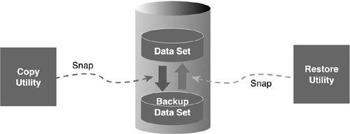

|
|
< Day Day Up > |
|
What Is a Disaster?It is quite natural for organizations to begin developing a disaster recovery plan before stepping back to analyze the question "What is a disaster?" Without a firm understanding of what type of disasters can occur, it is quite probable that the plan will be incomplete. A good place to start is to define the term disaster. The Oxford American dictionary defines a disaster as a "sudden great misfortune." It helps to expand on this, though. My definition follows:
Most of us have witnessed (at least on the news) a disaster situation. Tornadoes, hurricanes, earthquakes, and fires are prime examples of natural disasters. Disasters can also be man-made, such as electric failure, bursting pipes, and war. However, relatively few of us have actually lived through a disaster of the proportion shown on television. But many of us have had our basements flooded or been in an automobile accident. A disaster does not have to have global consequences in order for it to be a disaster to you. NOTE Of course, the events of 9/11 are a prime example of a disaster. The businesses located in the World Trade Center experienced a man-made disaster the likes of which we hope never to see again. Although disasters by their very definition are unpredictable and unlikely, a disaster is something that you must plan for. Insurance companies have made their livelihood on this premise. Every company should have a comprehensive and tested disaster plan that details how to resume business operations in the event of a disaster. Companies with disaster plans will provide a higher degree of customer satisfaction and, in the long run, will be more successful than companies with no plan. Disaster recovery for DB2 should be an integral component of your overall business recovery plan. But to what degree should the disaster planning be taken? Before your company can ascertain the appropriate level of recoverability, you must analyze the risks and determine the objectives. Determining and Managing RiskA disaster recovery plan is developed to minimize the costs resulting from losses of, or damages to, the resources or capabilities of your IT facilities. The success of any DB2 disaster recovery plan depends on how well you ascertain the risks involved. First, you must recognize potential disaster situations and understand the consequences of each. How these disasters affect your business is the bottom line reason for contingency planning in the first place. If your shop is on the coast, for example, tornadoes, floods, and hurricanes are more likely to cause problems than snowstorms (unless your are in a Northern area) or earthquakes (unless you are in California). Each DB2 application must undergo an analysis period whereby the impact of losing the application is evaluated. This can only be accomplished with the input of those individuals who will be affected—the end users. Risk can be broken up into three categories: financial loss, business service interruption, and legal responsibilities. Within each category, there are varying degrees of risk. Each application has a different impact on the company's bottom line the longer it is unavailable. Consider a bank, for example. Having the demand deposit application unavailable will cause a greater loss than having the human resources application unavailable, not only because deposits will be lost, but because customer trust will diminish. Similarly, varying degrees of business service interruption and legal responsibilities also will exist. Most applications will be impacted by each of the three risk areas, and each application should be analyzed to determine the level of risk associated with it. The disaster recovery plan needs to factor each of these categories into the mix to determine which applications are most critical. When developing your disaster recovery plan, remember that business needs are the motivating force behind your planning. It is prudent, therefore, to separate your systems into critical and non-critical applications based on business needs. The task of defining a system as critical has to be made by the area responsible for the business function that the system supports. It is a good idea to rank your applications into classes to determine which applications have the biggest impact if they are not available. Develop disaster recovery plans first for the critical applications—those in classes 1 through 3. These support the functions that are absolutely necessary should your company experience a disaster. Based upon these rankings, the appropriate backup strategy can be employed for the data (table spaces and indexes) used by each DB2 application. Non-critical (Class 4 and possibly Class 5) applications should be considered only after complete disaster recovery procedures have been implemented for the critical applications. For some non-critical (pure Class 5) applications, the decision might be made not to develop disaster recovery procedures. This decision is valid only when the system can be lost completely. Obviously, application systems of this type are rare. If you follow the procedures outlined in this chapter, you will have an exemplary disaster recovery plan for all your applications. Disaster Recovery RequirementsI have described the reasons why a disaster recovery plan is needed, but what should the goals of this disaster recovery plan be? One part of that plan must deal with the recovery of DB2 data. Most disaster recovery plans are composed of four goals:
These goals often conflict. For example, how can critical applications be online quickly when they usually consist of large databases? How can the loss of data be avoided when thousands of transactions update DB2 tables every second? Each decision in the plan requires a trade-off to be made. After you target applications for disaster planning, you then should decide on a disaster recovery strategy. This chapter details four strategies for DB2 disaster recovery planning—the sledgehammer, the scalpel, flashcopy, and DSN1COPY. Each has its strengths and weaknesses. You can choose one strategy or mix and match strategies based on the recovery requirements of each application. Disaster StrikesThe situation is grim. There has been a devastating fire at your data processing shop. All computer hardware, software, and data at your site has been destroyed. Are you adequately prepared to recover your DB2 data at a remote processing site? In this section, it is assumed that your data processing shop has planned for remote processing in the event of a disaster. In addition, it is assumed that the operating system software and environment have been recovered successfully. Given these caveats, let's continue with our discussion of DB2 disaster planning. DB2 disaster recovery happens in two steps: the recovery of the DB2 subsystem and the recovery of the application data. The primary concern of the DBA should be the recovery of the operational data. To accomplish this, however, you must recover your DB2 subsystem first. Therefore, your initial concern should be developing a comprehensive plan for recovering your DB2 subsystem. IBM's DB2 Administration Guide covers this topic in depth. DB2 Recovery BasicsTo fully understand DB2 disaster recovery, you must first review basic DB2 recovery procedures and techniques. The standard tools of DB2 recovery are the image copy backup, the DB2 log tapes, and internal DB2 tables and data sets. Refer to Chapter 32, "Backup and Recovery Utilities," (and Figure 32.1) for a discussion of DB2 recovery basics. The RECOVER utility is invoked to restore the table space data. Depending on your recovery strategy, RECOVER can be used to restore index data, too. DB2 uses all the information it stores in active and archive logs, the DB2 Catalog, the DB2 Directory, and the BSDS to recover data with a minimum of user input. The only input the RECOVER utility requires is the name of the table space (or index) to be recovered. DB2 does the rest. The reduction of user input in a recovery situation lessens the possibility of errors during a potentially hectic and confusing time. The automation of the recovery process, however, is just the circumstance that can complicate offsite DB2 disaster recovery planning. Strategy #1: The SledgehammerThis first strategy is referred to as the sledgehammer because it is a sweeping, basic approach to application backup and recovery. This strategy should be considered for non–24x7 applications, non-critical applications, and non-volatile applications. It is easy to implement and consists of the following steps:
There are some problems with this strategy, however. For example, many shops require DB2 to be available 24 hours a day, 7 days a week, so stopping the DB2 subsystem is not an option. As an alternative to stopping the DB2 subsystem, each application could have a regularly scheduled job to stop only the application. The job would need to QUIESCE the application table spaces, the DB2 Catalog (DSNDB06), and the DB2 Directory (DSNDB01) and then stop each application table space. Note that only an Install System Administrator (SYSADM) can quiesce the DB2 Catalog and DB2 Directory. The complete volume backup could be performed at this point, and, when complete, the application table spaces could be restarted. An additional problem arises when DB2 data sets are strewn across numerous DASD volumes. If the backup process copies data a complete volume at a time, many non-DB2 data sets that are not required for DB2 recovery will be copied. Most tools that perform complete DASD volume copies can also copy specific data sets, but this complicates the backup process by requiring the user to maintain a list of DB2 data sets as well as a list of DB2 volumes for backing up. If DFSMS, commonly referred to as system managed storage, is used to automate the placement of DB2 table space and index data sets, the location of these data sets is controlled by DFSMS and is dynamic. Therefore, the DB2 table space or index data set being backed up will not consistently remain on the same DASD volume. This further complicates the DASD volume backup strategy. The sledgehammer strategy is effective for shops willing to trade 24-hour processing capabilities for ease of disaster recovery preparation. But this strategy is not the optimal solution for most DB2 installations because most shops are unwilling to make this trade-off. Shutting down DB2 effectively prohibits the execution of every application that uses DB2 tables. This is usually impossible. Even running the QUIESCE utility affects other applications by forcing a point of consistency on the DB2 Catalog and the DB2 Directory. If you want to avoid these points of contention, choose another strategy. DFSMS Concurrent CopyDB2 supports using DFSMS for concurrent copying using the DB2 utilities, as well. The DFSMS concurrent copy function can copy a data set concurrently with other access. DB2 can invoke a DFSMS concurrent copy directly from the DB2 COPY utility. A DFSMS concurrent copy is recorded in the DB2 Catalog SYSIBM.SYSCOPY table with ICTYPE of F and STYPE of C. Likewise, DB2 can automatically restore DFSMS copies using the RECOVER utility. When RECOVER is invoked and a DFSMS copy needs to be part of the recovery, DB2 will invoke the DFDSS RESTORE command to apply the DFSMS concurrent copy. Of course, the copy can be applied outside the scope of the DB2 RECOVER utility if so desired. To restore the data sets, you can manually apply the DFSMS copies, and then you can use the RECOVER utility for point-in-time recovery in conjunction with the DB2 log. Strategy #2: The ScalpelThe second strategy uses native DB2 functionality to prepare for disaster recovery. This strategy is called the scalpel because it is precise and accurate. It involves the following steps:
The scalpel method differs from the sledgehammer in many ways, but perhaps the most important way is its reliance on DB2. Only application data recorded in the DB2 Catalog, the DB2 Directory, and the BSDS can be recovered. For this reason, the scalpel method relies heavily on the capability to recover the DB2 subsystem. Application data is as current as the last backup of the DB2 subsystem—one of the headaches caused by the automation of the DB2 recovery process. Consider, for example, an application that sends three image copy backups to a remote site daily. One backup is sent offsite in the morning to allow for post-batch recovery, another is sent offsite in the afternoon to allow recovery of all morning transactions, and a third is sent offsite in the evening to allow for recovery of all pre-batch transactions. However, if only one DB2 Catalog copy is sent offsite daily, for example, after the morning copy but before the afternoon copy, remote recovery can proceed only to the morning copy plus any archive logs sent offsite. For this reason, try to synchronize your application image copies with your DB2 Catalog backups. Additionally, as mentioned, ensure that the reports at the remote site reflect the status of the DB2 Catalog image copies. Otherwise, you will end up with greater confusion during the disaster recovery scenario, increased data loss, and unusable image copies at your remote site. The amount of data lost in an offsite recovery depends not only on the synchronization of application table space backups with DB2 Catalog backups but also on the timeliness of the backup of archive logs and the synchronization of the DB2 Catalog backup with the logs. When the DB2 Catalog is backed up to be sent offsite, issue the ARCHIVE LOG command as part of the copy job. Send to the remote site a copy of the archived log that was produced along with the DB2 Catalog image copies. Additionally, keep at least three image copy backup tapes at your remote site. This provides a satisfactory number of backups if one or more of your image copy tapes is damaged. DB2 automatically falls back to previous image copy backups when a tape is damaged. Changes are applied from the archive logs to re-create the data lost by falling back to the previous image copy. Note also that updates recorded on the DB2 active logs at the time of the disaster are lost. Recovery can be performed through only the last archive log available at the remote site. The final consideration for the scalpel method is the creation of the underlying table space and indexspace data sets at the remote site. If you are using native VSAM, you must use AMS to create the data sets before recovering each table space and its related indexes. If you are using STOGROUPs for your production data sets, simply ensure that the STOGROUPs have been altered to point to valid DASD volumes at the remote site. The RECOVER utility creates the underlying VSAM data sets for you. Strategy #3: DSN1COPYThe third strategy, using DSN1COPY, generally is not recommended because it operates behind the back of DB2 and therefore sacrifices the rigorous control provided by DB2 backup and recovery procedures. Implementing disaster recovery in this manner can be beneficial, however, for a limited number of non-critical applications. This strategy is close to the sledgehammer approach but a little more complicated. Follow these steps for each DSN1COPY that must be executed:
Recovery at the remote site must be performed using DSN1COPY because these backup data sets are not recorded in the DB2 Catalog. Therefore, each table space and index space data set must be created using AMS before the DSN1COPY can be executed to restore the application data. This complex and potentially error-prone process should be avoided. If your application data is very stable, however, you might want to avoid recording backups in the DB2 Catalog to simplify your DB2 Catalog maintenance procedures. The MODIFY utility must be executed periodically to clean up the SYSIBM.SYSCOPY table and the SYSIBM.SYSLGRNX table. MODIFY is run specifying a table space and a date range that deletes all image copy and log information for the table space for that date range. Each application must supply the appropriate date range for image copy deletion. If your date range is unknown, unstable, or random, you might want to avoid using the DB2 Catalog for recovery altogether. You could simply create four DSN1COPY backups every time your (stable) application data changes. Retaining two on-site and sending two offsite should suffice. Remember, this method should be used only for stable data and is not recommended. The most desirable method is to use the DB2 COPY, RECOVER, and REBUILD utilities and to execute the MODIFY utility on a table space by table space basis for each application. Non-Critical ApplicationsSometimes simple DSN1COPY data sets for table spaces in non-critical applications suffice for offsite recovery. These should be taken when DB2 is not operational (or the application has been stopped). Because the application is non-critical, the DSN1COPY might need to be performed less frequently. This decision must be made on an application-by-application basis. Strategy #4: Suspend, FlashCopy, and ResumeA fourth approach to DB2 disaster recovery makes use of the SET LOG SUSPEND command and FlashCopy or similar disk technology. The SET LOG SUSPEND command allows can be used to temporarily freeze a DB2 subsystem by stopping updates to the log. The logs and data can be quickly copied using IBM's Enterprise Storage Server FlashCopy or equivalent vendor products to produce instant copies. This technique is gaining popularity in DB2 sites because it minimizes operational disruptions. After shipping tapes, created from the backup copy, to a remote site, DB2 users can implement a simplified disaster recovery scenario, which also reduces the recovery time to that necessary to restore the tape dumps. Follow these steps to implement this approach:
NOTE Normally FlashCopy copies are written to disk. However, you can use FlashCopy to write directly to tape by using the TSO interface to FlashCopy and specifying a mode of NOCOPY. Because the relationship persists until the tape copy is complete, you would be better off to FlashCopy to disk and then copy to tape for offsite disaster copies. Third Party SolutionsThird party solutions exist that simplify this approach to making instant copies. BMC Software offers Instant Copy and Recover using its COPY PLUS and RECOVER PLUS utilities. Instant Snapshot utilizes the data set snap capabilities of the storage devices. The data sets are "copied" to the same or another device via the snap process. The method used depends upon the technology of the storage vendor. The copied data sets are cataloged with unique names and remain on disk. These data sets are immediately ready and available for recovery or other activities. Although an Instant Snapshot copy does not require the data to be physically duplicated onto tape or other media, external copies of the data sets created by Instant Snapshot can be created. For example, COPY PLUS can create a copy of an image copy for offsite storage or other purposes from the snapped data sets. Recovery using the snapped data sets employs the same Instant Snapshot technology. RECOVER PLUS is used to select the appropriate data sets based upon the desired recovery point. Instant Snapshot snaps them back using the storage vendor technology appropriate to the device. The recovery utility's subsequent log apply or other recovery steps begin immediately thereafter. Figure 38.1 depicts this process. Figure 38.1. Instant copy/restore. Speed in the restore process is the primary advantage of Instant Snapshot. Testing of the BMC solution has produced results indicating that the snap of a data set requires effectively the same amount of time whether it is one track or two gigabytes. The restore portion of a recovery of a 2GB data set occurred in approximately 12 seconds. Another benefit of the ISV offerings is that they are integrated with offerings from multiple different storage vendors. The BMC solution is used as an example; other vendors have similar types of offerings. |
|
|
< Day Day Up > |
|